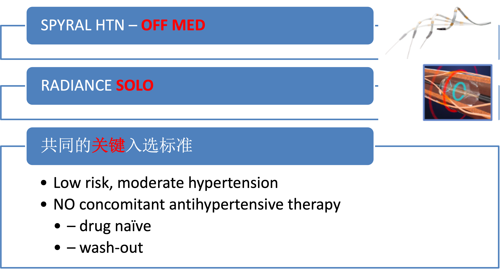
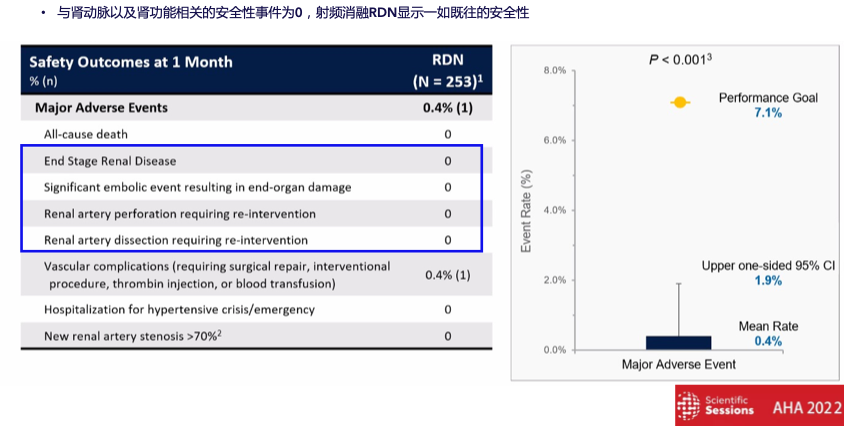
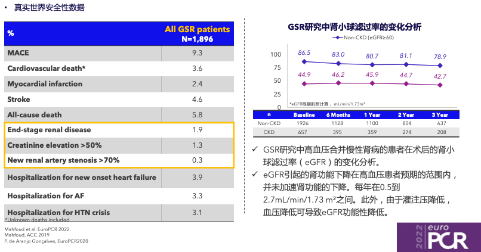

RDN治疗高血压研究进展
北京大学第一医院心内科
2022年12月30日
高血压面临的全球挑战
目录
高血压面临的全球挑战
RDN循证研究历程
RDN真实世界证据
RDN的挑战与机遇
未来展望
纵观全球，血压控制率都并不理想
- 提高血压的知晓率、治疗率和控制率有着更大的意义
- 尤其低收入国家更差
Figure 1: The hypertension care cascade by region
Data are percentages with 95% CIs. Individual points depict the point estimate for each country. ALB=Albania. AZE=Azerbaijan. BGD=Bangladesh. BLZ=Belize. CRI=Costa Rica. IDN=Indonesia. KAZ=Kazakhstan. KGZ=Kyrgyzstan. LSO=Lesotho. MEX=Mexico. MNG=Mongolia. MOZ=Mozambique. NAM=Namibia. NPL=Nepal. ROU=Romania. SYC=Seychelles. TLS=Timor-Leste. UGA=Uganda. ZAN=Zanzibar.
药物负担及用药依从性差
已成为高血压治疗的重要问题
- 从2种降压药增加到3种，加倍了不依从性
- 使用5种降压药的患者近50%存在不依从
- 6个及以上的绝大多数患者无法依从
高血压器械治疗
- 第二代RDN器械，弥补了前期不足，并开展了多项临床试验，询证医学证据越来越充足
- 除RDN外，其他部分器械治疗有小规模探索研究提示短期有效性，但必须通过后续随机对照研究进一步证实现阶段高血压器械治疗仍应严格限制在有经验和能力的中心开展
- 当考虑器械治疗高血压时，应全面考虑患者的病生理因素，充分考量风险-获益及个体化治疗
- Cardiac neuromodulation therapy: 心脏神经调节疗法
- Electronical baroreflex activation therapy: 颈动脉压力感受器电刺激疗法
- Endovascular baroreflex amplification therapy: MobiusHD植入自膨支架放大颈动脉压力感受器
- Transvenous carotid body ablation: 经静脉颈动脉体消融术
- Central iliac arteriovenous coupler: 髂动静脉吻合术
高血压器械治疗里程碑
其他高血压器械治疗
仅有单臂短期疗效证据有待RCT研究进一步证实疗效及安全性
- Cardiac neuromodulation therapy: 心脏神经调节疗法
- Electronical baroreflex activation therapy: 颈动脉压力感受器电刺激疗法
- Endovascular baroreflex amplification therapy: MobiusHD植入自膨支架放大颈动脉压力感受器
- Transvenous carotid body ablation: 经静脉颈动脉体消融术
- Central iliac arteriovenous coupler: 髂动静脉吻合术
RDN循证研究历程
目录
高血压面临的全球挑战
RDN循证研究历程
RDN真实世界证据
RDN的挑战与机遇
未来展望
RDN相关著名研究回顾
SYMPLICITY HTN-1&2
RDN术后血压明显且持续的下降
射频消融RDN的临床研究里程碑
SYMPLICITY HTN-3临床研究
射频消融RDN术后三年长期显著
15.6mmHg动态收缩压降压效果
HTN-3后
美敦力RDN临床研究进入SPYRALHTN时代，是全球范围最大的RDN临床研究，累计入组超4000名患者，有力证明了射频消融RDN的有效性、安全性和持久有效性
站在巨人的肩膀上

SPYRAL HTN-OFF MED研究设计
SPYRAL HTN-OFF MED
全队列研究达到安全性终点
SPYRAL HTN-OFF MED主要结果

SPYRAL HTN-OFF MED主要结果
SPYRAL HTN-OFF MED
总结：SPYRAL HTN-OFF MED全队列研究有力证明了射频消融RDN独立于药物作用之外的有效性和安全性
- 研究将主要终点设置为3个月：
- 一方面是出于伦理及患者安全考虑，3个月后患者可以开始用药；
- 另一方面，既往 RDN 相关研究显示 3 个月后血压可以进一步降低 1,2
- 由于SPYRAL HTN-OFF MED全队列研究纳入的是不服用药物的高血压患者，因此能充分证明美敦力射频消融RDN独立于药物之外的显著降压效果及安全性，切实给高血压患者带来临床获益；
- 药物治疗目前仍是高血压的主要治疗手段，为持续证明射频消融RDN在药物治疗外的降压获益与安全性， SPYRAL HTN-ON MED研究应运而生。
RADIANCE SOLO研究
难治高血压：
ACC.21 RADIANCE-HTN TRIO
研究流程及入选标准
4周三联降压后的基线血压
主要终点：2个月时日间ABPM-SBP变化
2个月时ABPM

SPYRAL HTN-ON MED临床研究设计
SPYRAL HTN-ON MED PILOT
6个月主要终点及3年长期随访数据
SPYRAL HTN-ON MED研究
6个月内药物负荷的变化情况

SPYRAL HTN-ON MED 6个月
有效性终点-概率分析（Frequentist）
SPYRAL HTN-ON MED 6个月
有效性终点-胜率分析（Win Ratio）
SPYRAL HTN-ON MED
全队列研究1个月主要安全性终点

SPYRAL HTN-ON MED总结
SPYRAL HTN-ON MED研究显示与既往RDN研究一致的有效性和安全性
- 试图在ON MED研究中严格规范患者服药的难度非常大，特别是ON MED全队列研究的随访80%都是在COVID-19期间完成；
- 虽然SPYRAL HTN-ON MED全队列研究因假手术擅自增加服药而未达到主要有效性终点，但结合SPYRAL HTN-OFF MED全队列研究等来看，仍旧证明了射频消融RDN降低血压的一致的有效性；
- SPYRAL HTN-ON MED Pilot研究结果证实射频消融RDN与假手术组相比，降压具有长期有效性；
- 射频消融RDN通过SPYRAL HTN-ON MED全队列研究充分证实其安全性，不损伤肾动脉及肾功能； 5.高血压微创介入治疗的初衷并不是取代药物治疗，而是与药物治疗一同，给高血压患者带来全新的治疗手段，助力提升血压达标率，给患者带来更多临床获益。
RDN真实世界证据
目录
高血压面临的全球挑战
RDN循证研究历程
RDN真实世界证据
RDN的挑战与机遇
未来展望
真实世界数据
Global SYMPLICITY Registry (GSR) DEFINE
美敦力GSR DEFINE
全球登记研究所用器械
射频消融RDN在高血压患者人群中
显示持久的降压效果
射频消融RDN患者术后
药物负荷降低，且有更优的血压达标率
射频消融RDN术后
肾功能与肾动脉的长期安全性

我们的经验：Symplicity国内特许使用

极度扭曲的肾动脉：RDN操控性良好
RDN的挑战与机遇
目录
高血压面临的全球挑战
RDN循证研究历程
RDN真实世界证据
RDN的挑战与机遇
未来展望
RDN降压效果如何？

OFF-Med研究中有近29%的病人
的血压没有降低反而有所升高
无法确定肾交感神经的位置
盲目消融的结果
需要标测肾神经/选择性消融去除肾交感神经
无论是RF、超声、酒精
RDN应答率只有60-70%
国内新RDN器械研发如火如荼
Clinical Evidences: Hot Spot

Clinical Evidence: Cold Spot
- 肾动脉周围不仅有交感神经，也有副交感神经
- 肾神经标测/选择性消融可能更重要
标测肾神经/选择性RDN双重功能
未来展望
目录
高血压面临的全球挑战
RDN循证研究历程
RDN真实世界证据
RDN的挑战与机遇
未来展望
我国未来RDN亟待规范化推广
RDN中国专家立场文件
我们的任务依然艰巨！
谢谢！
北京大学第一医院